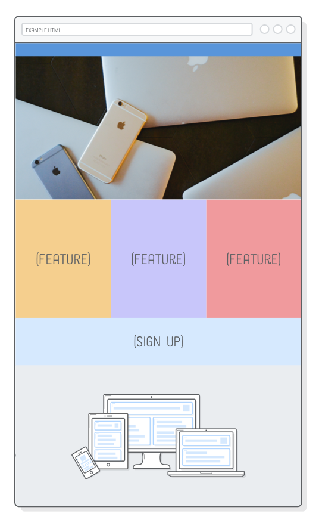

SETUP
To experiment with responsive images, we need a responsive website to work with. This chapter will be building off of the example web page we put together in the previous chapter. We’ll be adding two images to the page so it looks like the following. This might seem simple, but these images will change depending on the user’s device (which is really cool).

If you’re continuing from the last chapter, you simply need to download these image assets and add them to
your project’s images/ folder.
If you’re just joining us, go ahead and download the complete example project, unzip it, and open it up with Atom. If you’re not familiar with the Atom text editor, be sure to take a read through the introduction of this tutorial series.

In either case, your project files should look like this before moving on.
Notice how we have multiple copies of our PNG and JPG images (e.g.,
illustration-big.png and illustration-small.png).
We’ll be letting the browser pick which one of these it should load depending
on the device’s size and screen resolution.